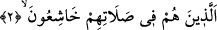

fakirlerdir.
Âyette geçmiş zaman siygasının kullanılması, onların kesin olarak kurtuluşa
erdiklerine delâlet etmek içindir. “ ” kelimesi ise önceden olması beklenen şeyin
gerçekleşeceğini ifâde etmek içindir. Çünkü mü’minler, Allah’ın fazlından bu kurtuluşu
bekliyorlardı.
“
” bâkî olmak, murâda nâil olmak ve hoşlanılmayan şeyden kurtulmaktır. “
”
ise felâha dâhil olmak demektir. Felâha dâhil etmek mânâsına da gelir. Âyeti (
“Gerçekten (Allah) mü’minleri kurtuluşa erdirmiştir.” şeklinde okuyanın
kıraati de bu mânâya göredir.
Hakîkî kurtuluş, mutlak îman ile hâsıl olmaz. Îman ise tevhid, peygamberlik, tekrar
diriltilme ve yapılanların karşılığının verilmesi gibi Peygamberimiz (a.s.)’ın dîninden
zorunlu olarak bildiği şeyleri tasdik etmektir. Hakîkî kurtuluş, bütün şartları yerine
getirmeye bağlı olan hakîkî îman ile hâsıl olur. Onun için Allah Teâlâ açıklamak ve
övmek üzere şöyle buyurmuştur:
2. Onlar ki, namazlarında huşû içindedirler;
“
” korkmak ve boyun eğmektir. el-Müfredât’ta der ki: “
” itâatkarlık/boyun
eğme demektir. Çoğunlukla uzuvlarda görülen boyun eğme hakkında kullanılır. “
”
ise çoğunlukla kalbde duyulan boyun eğme hakkında kullanılır. Onun için bir rivâyette
“Kalb itâat edince, uzuvlar boyun eğer.”[62]
Buna göre âyetin mânâsı, onlar Allah’tan korkarlar, O’na boyun eğerler ve gözlerini
secde yerlerinden ayırmazlar. Kâşifî der ki: “Gözlerini secde mahalline koymuş,
gönüllerini ise münâcât dergâhında hazır bir hâlde kılmışlardır.”
Rivayet edilir ki Hz. Peygamber (a.s.) namaz kıldığında gözünü semaya kaldırırdı. Bu
âyet nâzil olunca gözünü secde yerine doğru çevirdi. Yine Efendimiz (s.a.) namaz kılan
bir kimsenin sakalıyla oynadığını gördü ve şöyle buyurdu: “Bu adamın kalbinde huşû
olsaydı, diğer uzuvları da huşû içinde olurdu.”[63]
en-Nütef’te şöyle der: “İlk tekbir sırasında yüzü göğe doğru çevirmek mekruhtur.
Bunun yasaklanması, namazda yasak olan sağa-sola bakmak kabilinden olması
sebebiyledir. Namaz dışında ise mekruh değildir. Çünkü duânın kıblesi ve bereketlerin
inme yeridir.
Kâşifî der ki: “Lübâb’da şöyle rivâyet edilmiştir: Kıyam hâlinde iken gözün secde
mahalline konmuş/yönelmiş olması gerekir. Mekke-i Muazzama’da ise Beytullah’a
bakmak gerekir.” Bir hadiste “Kul namaza durduğunda ancak Rahman’ın
huzurundadır. Etrafına bakındığında, Allah Teâlâ ona: “Kime bakıyorsun? Benden